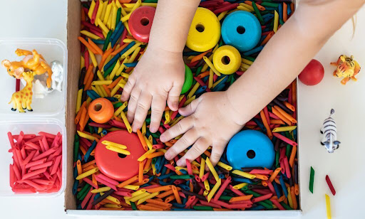
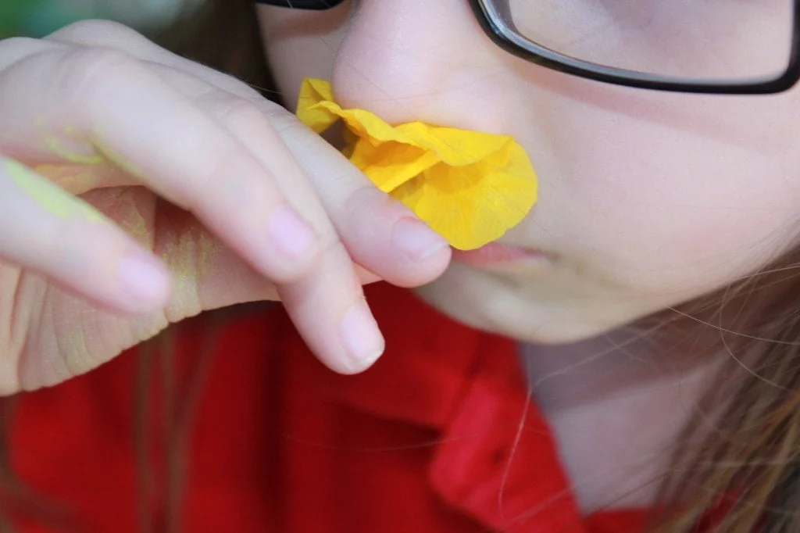

Actividades
Magia y texturas

Los niños explorarán texturas con un fuido no newtoniano y una tabla sensorial
para estimular el tacto.
Materiales:
- Harina
- Agua
- Colorantes
- Recipiente
Nariz de Sabueso

Mediante frascos con diferentes olores, los niños y niñas intentarán adivinar cada
aroma usando solo su sentido del olfato.
Materiales:
- Café
- Canela
- Jabón
- Esencia de menta / vainilla
Explosión de sabores

Con los ojos vendados, los niños probarán distintos alimentos y deberán
identifcarlos solo a través del gusto.
Materiales:
- Plátano
- Galletas saladas
- Limón
- Chocolate negro
Mentes Creativas

Un juego donde los niños observarán y luego replicarán una construcción,
fomentando memoria y creatividad, donde después podrán realizar ellos mismos
sus propias construcciones.
Materiales:
- Palos de madera
- Folios
- Cartón
- Pegamento
Pausa Activa

Sesión de bienestar enfocada en ejercicios de respiración profunda y estiramientos suaves, diseñados para relajar el cuerpo,
liberar tensiones acumuladas y recuperar energía. A través de técnicas de relajación.
Materiales:
- Cámara
- Trípode
- Objetivos
- Iluminación
Ritmo y Diversión

Actividad de baile llena de energía y diversión, acompañada de música animada para estimular el ritmo,
mejorar la coordinación y fortalecer la conexión grupal. A través de movimientos dinámicos y coreografías sencillas
Materiales:
- Cámara
- Trípode
- Objetivos
- Iluminación